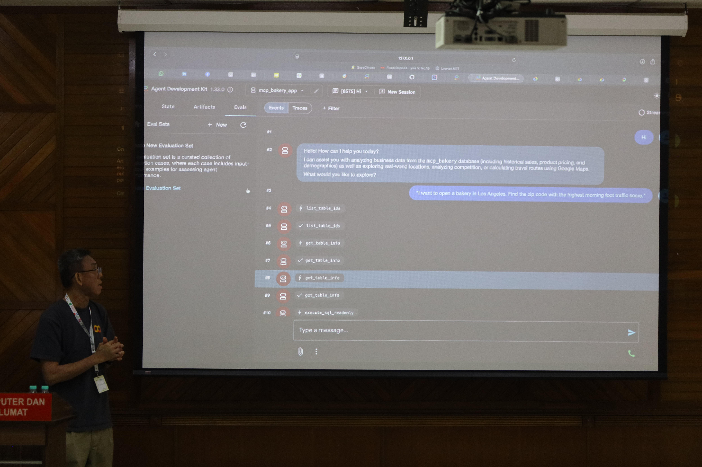
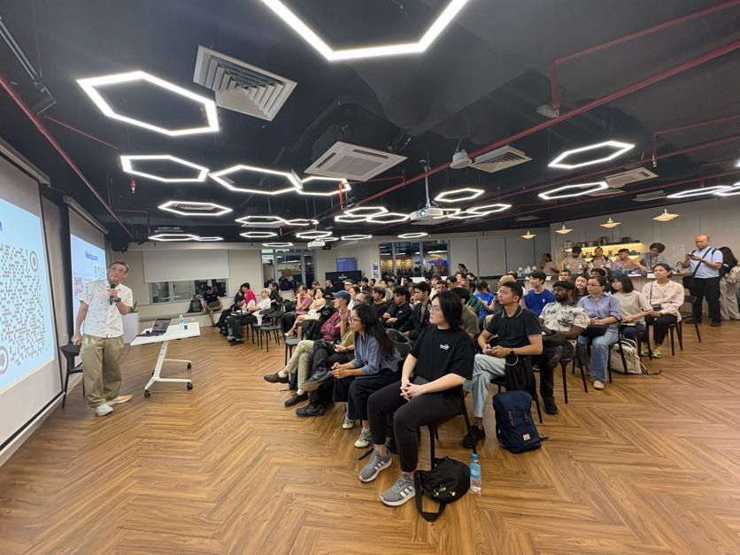
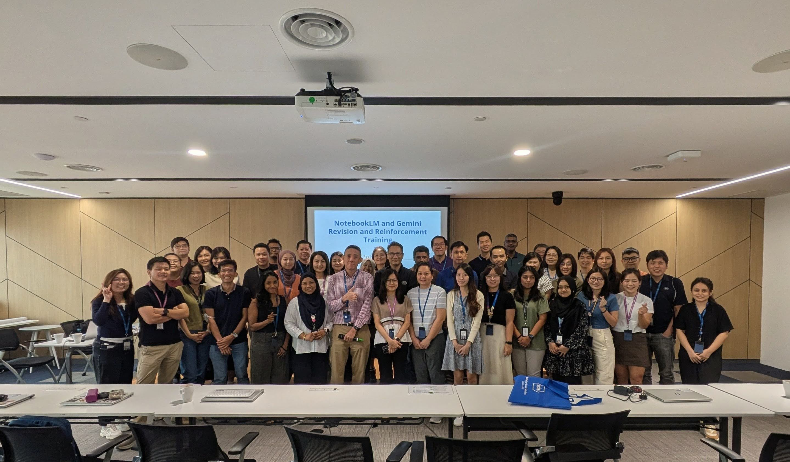
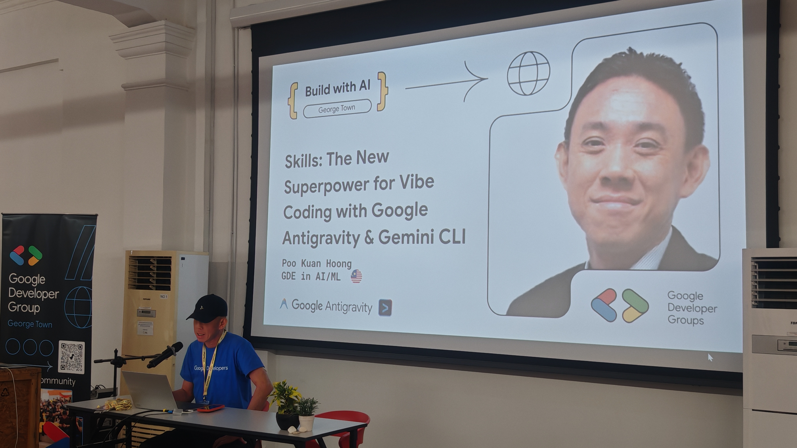

Talks & Slides
Conference presentations, workshops, keynotes, and judging engagements on AI, ML, and Google Cloud
Build Your First AI Agent: From Zero to Agentic App with Google ADK
In this session, students will get a hands-on introduction to AI agents — intelligent systems that go beyond chat and actually perform tasks. Learn how agentic systems work, why they matter, and how they are shaping the future of software. The highlight of the session is a live coding demo using Google's Agent Development Kit (ADK), where a simple AI agent app will be built step-by-step.
 View Slides
View SlidesBuilding Agentic Applications with Google ADK and MCP Servers

A hands-on session on building agentic applications using the Google Agent Development Kit (ADK) and Model Context Protocol (MCP) servers, covering how to design and deploy AI agents that interact with real-world tools and data.
Getting Started with OpenClaw on Amazon Lightsail

A practical walkthrough on spinning up and experimenting with AI workloads on Amazon Lightsail.
Personal AI Agent on Amazon Lightsail with OpenClaw
Building a lightweight, cost-efficient AI personal assistant on AWS Lightsail that integrates real-world tools like Gmail, Calendar, and GitHub to move beyond chat into actionable automation.
Gemini and NotebookLM: Revision and Reinforcement Training

With the advancements in Gemini 3, this session aims to revisit the latest capabilities of Gemini and NotebookLM, while reinforcing effective usage and practical applications across workflows. Participants will gain updated insights and hands-on understanding to maximize the value of these tools.
Getting Started with Google MCP Servers
As AI agents move beyond simple chat and into autonomous workflows, the biggest hurdle remains data silos. How do you safely grant an LLM access to your BigQuery datasets, Firestore databases, or live Google Cloud logs? Enter the Model Context Protocol (MCP). In this workshop, we will explore Google’s new Managed MCP Servers—fully hosted endpoints that allow your AI agents to interact with Google Cloud infrastructure without managing complex server-side code.
Getting started with Google MCP servers
Get started with Google MCP Servers and learn how they enable scalable, modular AI systems. This session will walk you through the fundamentals, setup, and practical use cases to help you build production-ready AI workflows on Google Cloud.
Skills: The New Superpower for Vibe Coding with Google Antigravity and Gemini CLI

AI-assisted development is unlocking vibe coding, where ideas flow quickly from thought to implementation. Structured skills become the new superpower for developers working with AI systems. We explore how codifying reusable capabilities can dramatically improve the quality, reliability, and speed of vibe coding workflows. Using practical demonstrations with Google Antigravity, we will show how skill-based approaches enable developers to guide AI systems more effectively, reduce iteration cycles, and move from vibes to repeatable, high-performance development.
Agentic AI Coding with Kiro
Webinar exploring agentic AI coding workflows with AWS Kiro — from specification to code generation using AI agents.
Skills: The New Superpower for Vibe Coding with Google Antigravity
AI-assisted development is unlocking a new style of building software — often called vibe coding — where ideas flow quickly from thought to implementation. While tools like Google Antigravity accelerate generation, the real multiplier of performance is skills.
[Judge] Build with AI: Gemini Hackathon with Google DeepMind
Served as judge at the Build with AI: Gemini Hackathon — a full-day event focused on building real-world applications using Google's latest AI technologies, specifically Gemini models and Google AI Studio.
Agentic Coding with AWS Kiro: From Vibe to Specs
Exploring vibe coding versus spec-driven development with AWS Kiro — demonstrating how agentic AI tools change the software development workflow.
Agent2Agent (A2A): A Beginner's Guide
An introduction to the rapidly growing world of autonomous agents and their ability to collaborate, communicate, and solve problems together. Covers core concepts, underlying architectures, and real-world use cases for agent-to-agent interactions.
Develop Multi-Agent Systems with Agent Development Kit (ADK)
Covers the fundamentals of Google's Agent Development Kit (ADK) and demonstrates how to build intelligent agents that collaborate to solve complex problems.
Building Agent AI with Agent Development Kit (ADK)
An overview of using Google's Agent Development Kit (ADK) to build intelligent agents, presented at DevFest Jakarta 2025.
Beyond tidyverse: R's Journey into the AI-Powered Future
Keynote on the evolution of R beyond the tidyverse — exploring how AI, LLMs, and generative tools are reshaping the R ecosystem and what it means for data scientists.
Build and Ship Your Own MCP Server and MCP Client
Webinar on building custom integrations using the Model Context Protocol (MCP). Covers MCP architecture, server development, practical patterns, deployment strategies, and real-world examples.
Agentic AI Coding Assist with Gemini CLI
90-minute hands-on workshop on Gemini CLI, Google's agentic AI coding assistant. Covers setup, intelligent code suggestions, task automation, and real-time debugging from your terminal.
Build Your First AI Agent with Google's Agent Development Kit (ADK)
Beginner's guide to building autonomous AI agents that can perceive, reason, act, and learn using Google's Agent Development Kit.
Agentic AI Vibe Coding with Kiro
Talk at AWS Community Malaysia 2025 on agentic AI vibe coding workflows using AWS Kiro.
AI Agent Development Kit (ADK): A Beginner's Guide
Hands-on workshop introducing the Agent Development Kit (ADK) — a flexible, model-agnostic, open-source project from Google for building production-ready AI agents.
Agent2Agent (A2A) Protocol: A Primer
Introduction to the Agent2Agent (A2A) Protocol — covering basic concepts, how A2A works, and its implementation for enabling communication between AI agents.
Agentic AI Coding with Gemini CLI
Live demonstration showcasing agentic coding capabilities using the Gemini CLI, enabling developers to automate coding tasks and build AI-powered applications more efficiently.
Agentic AI Coding with Gemini CLI
Hands-on workshop on agentic AI coding using the Gemini CLI — building autonomous agents that can reason, code, and iterate intelligently in real-world development workflows.
Getting Started with Gemini CLI — Open Source AI Agent Dev Coding Partner
Agentic AI with Gemini 2.5 Pro
Exploring the frontier of agentic AI using Gemini 2.5 Pro — intelligent agents capable of autonomous decision-making, adaptive learning, and dynamic task execution.
[IO Extended Hanoi 2025] Harness the Power of NotebookLM: Personalized AI Research Assistant
Exploring how NotebookLM can enhance research, learning, and productivity — transforming notes and documents into a personalized AI research assistant grounded in your own sources.
[IO Extended KL 2025] Agentic AI with Gemini 2.5 Pro
Discovering how Gemini 2.5 Pro enables truly agentic AI systems — autonomous decision-making, adaptive learning, and dynamic task execution with practical use cases.
Introduction to Large Language Model, Foundation Model and Transformer Model
[Build with AI] Gemini 2.5 Pro for Productivity
How to use Gemini 2.5 Pro to improve efficiency and productivity in day-to-day workflows.
[Build with AI UPM] NotebookLM: AI Research Assistant
Discovering how NotebookLM can transform research — organising information, generating insights, and accelerating learning for researchers, students, and professionals.
NotebookLM: Your Personalised AI Research Assistant
How NotebookLM, powered by Gemini 2.5 Flash, is transforming research, knowledge management, and productivity through conversational grounded AI.
Creating Fun and Unique Art with AI: How Imagen 3 Works
Overview, creation, and customisation of images using Google's Imagen 3 — a cutting-edge text-to-image AI model.
AI-Driven Image Creation: Hands-On with Imagen 3 in Google Colab
Immersive lab session exploring the capabilities of Imagen 3 — transforming text prompts into captivating visuals using Google Colab.
[DevFest George Town 2024] AI-Driven Image Creation: Hands-On with Imagen 3 in Google Colab
Hands-on with Imagen 3 using Google Colab and Vertex AI SDK.
GenAI in Action Roadshow — Building Custom Generative AI Agents
From Naive to Advanced Retrieval Augmented Generation (RAG): Optimizing RAG for Superior Performance
Practical talk on common RAG pitfalls and advanced retrieval techniques to build production-grade RAG systems.
From Naive to Advanced Retrieval Augmented Generation (RAG): Optimizing RAG for Superior Performance
Talk at AWS Cloud Day Malaysia covering RAG failure modes and practical strategies to improve retrieval quality and response accuracy.
[DevFest Cloud Kuala Lumpur 2024] AI-Driven Image Creation: Hands-On with Imagen 3 in Google Colab
Image creation using Imagen 3 via Google Colab.
Introduction to Multimodal Use Case with Gemini 1.5
How to Fine-Tune Open Vision Language Model, PaliGemma
Steps and best practices for effectively adapting PaliGemma — an open vision language model — to specific tasks and datasets.
How to Fine-Tune Open Large Language Model, Gemma
Essential steps for fine-tuning Gemma — covering data preparation, infrastructure setup, transfer learning, and hyperparameter tuning.
How to Fine-Tune Open Large Language Model, Gemma
How to Fine-Tune Open-Source Large Language Models (LLMs) Gemma
Introduction to Multimodal Use Cases with Gemini
Introduction to Retrieval Augmented Generation (RAG) with Gemini
Getting Started with LLM and RAG
Introduction to Large Language Models and Retrieval Augmented Generation (RAG) with Gemini.
Introduction to RAG with Gemini
[TFUG] Getting Started with Gemini and Google AI Studio
Learn how to access Gemini via API and prototype with Google AI Studio.
[DevFest Cloud Bangkok 2023] The Power of Colab Enterprise with Vertex AI and BigQuery
Utilising Colab Enterprise to power Vertex AI and BigQuery Studio and run analysis with notebooks.
[DevFest GeorgeTown 2023] Introduction to Keras 3.0: Unlocking the Power of JAX with Keras
Keras 3.0 multi-backend support with JAX.
[DevFest KL] Introduction to Keras Core: Unlocking the Power of JAX with Keras Core
Predictive and Generative AI Projects with Vertex AI Feature Platform
Building predictive and generative AI projects with Vertex AI Feature Store.
Introduction to Keras Core: Unlocking the Power of JAX with Keras Core
Introduction to Keras Core
Introduction to Keras Core where multi-backend support is back.
Generative AI with Google PaLM and MakerSuite
The Evolution of Large Language Models (LLMs): From BERT, GPT-3, PaLM etc
Generative AI and Design
Exploring the generative model via diffusion models and creative AI applications in design.
The Evolution of Large Language Models: from BERT, GPT to LaMDA and LLaMA
Key milestones in the development of LLMs — from the first neural language models to current state-of-the-art models.
Dialog Tiga Penjuru: ChatGPT vs Bard — Hilang Kerja? Malas Fikir?
National TV panel discussion on the impact of ChatGPT and Bard on jobs and critical thinking, alongside Prof. Ts. Dr. Ahmad Zukarnain (UPM) and Prof. Zaharom Nain (University of Nottingham Malaysia).
TEDx UTAR — Speaker
How To Train AI to be a Good Artist?
Generative models and diffusion models for creative AI art generation.
Introduction to R Programming using Google Colab
Utilising Google Colab to do R Programming.
An Introduction to On Device Machine Learning
Talk about TensorFlow Lite and on-device machine learning.
Getting to Know and Have Fun with TensorFlow.js
Getting Started with TensorFlow.js
Getting Started with TensorFlow.js
Leveraging the Power of AI in the Advertising Industry
Getting Started with TensorFlow Extended (TFX)
Introduction to TensorFlow Extended (TFX) for production ML pipelines.
Embracing Ecosystem of the Industrial Revolution 4.0, Are we Ready?
Panel discussion on how to apply AI/ML in Industry Revolution 4.0.
Harnessing the Power of TensorFlow 2.0
Introduction to Machine Learning
Exploring TidyVerse
Strategies to Kick-off AI Projects in an Organization
The Quest to the Answer of Life, the Universe and Everything…
Harnessing AI for Competitive Advantage
Machine Learning Bootcamp Train the Trainer Workshop
ML Bootcamp Train the Trainer organized by Google Singapore.
Being Data Scientist: The Facts & Myths
What's New in TensorFlow 2.0?
Introduction to Machine Learning (Crash Course)
TensorFlow 2.0: What's New
How to Build Your First TensorFlow.js Application
Build a Recommender System
Artificial Intelligence Application
Interested in having me speak at your event? Connect on LinkedIn.